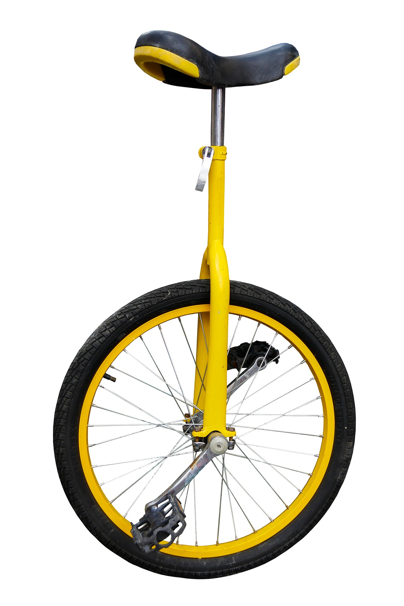
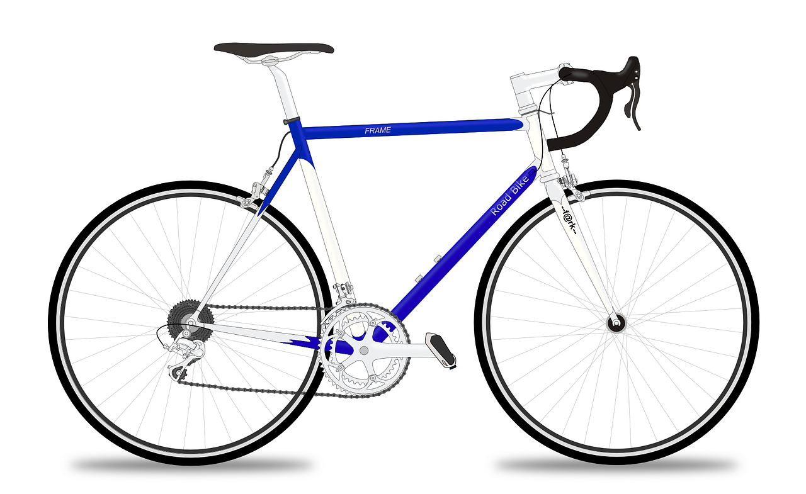
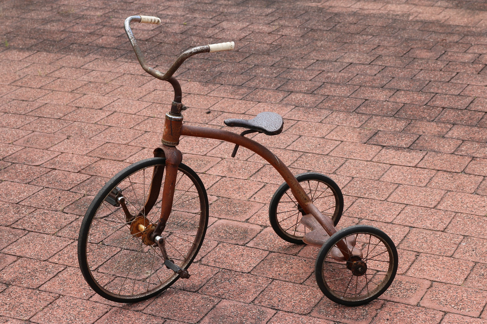

word


Lesson 127
uni-, bi-, tri-

ufliteracy.org


Lesson 127
uni-, bi-, tri-


See UFLI Foundations lesson plan Step 1 for phonemic awareness activity.


See UFLI Foundations lesson plan Step 2 for student phoneme responses.


ai
ay
aigh
oa
ow
ou
igh
ea
oo


See UFLI Foundations lesson plan Step 3 for auditory drill activity.

No slides needed for auditory drill.


See UFLI Foundations lesson plan Step 4 for blending drill word chain and grid.
Visit ufliteracy.org to access the Blending Board app.


See UFLI Foundations lesson plan Step 5 for recommended teacher language and activities to introduce the new concept.
Prefixes
added to the beginning of a word to change the word’s meaning
bi-
tri-
uni-
uni-
uniform
one 1
bi-
bisect
two 2
tri-
triangle
three 3
triple
unicycle
bicycle
tricycle




unicycle
bicycle
tricycle

uniform
unify
biweekly
bilingual
triathlon
tripod

See UFLI Foundations lesson plan Step 5 for words to spell.
Handwriting paper to model spelling.

See UFLI Foundations lesson plan Step 5 for words to spell.
Handwriting paper for guided spelling practice.


Insert brief reinforcement activity and/or transition to next part of reading block.

Lesson 127
uni-, bi-, tri-

New Concept Review

See UFLI Foundations lesson plan Step 5 for recommended teacher language and activities to review the new concept.
Prefixes
added to the beginning of a word to change the word’s meaning
bi-
tri-
uni-
uni-
uniform
one 1
bi-
bisect
two 2
tri-
triangle
three 3
triple
unicycle
bicycle
tricycle
unicorn
biweekly
triangle
uniform


See UFLI Foundations lesson plan Step 6 for word work activity.
Visit ufliteracy.org to access the Word Work Mat apps.
definition | |
uniform | A uniform is one outfit that people wear to work or school. |
bilingual | |
triangle |
word | definition |
triple | |
triplets |


See UFLI Foundations lesson plan Step 7 for irregular word activities.
The white rectangle under each word may be used in editing mode. Cover the heart and square icons then reveal them one at a time during instruction.

See UFLI Foundations manual for more information about reviewing irregular words.
Insert slides for previously taught irregular words students have not mastered yet.
Lessons 123-128
Handwriting paper for irregular word spelling practice. Use as needed.
See UFLI Foundations manual for more information about reviewing irregular words.


See UFLI Foundations lesson plan Step 8 for connected text activities.
Macy, Stacy, and Tracy are triplets.
At some jobs, you need to wear a uniform.
If you can speak two languages you are bilingual.
See UFLI Foundations lesson plan Step 8 for sentences to write.

The UFLI Foundations decodable text is provided here. See UFLI Foundations decodable text guide for additional text options.
The Triplets Go to School
Macy, Stacy, and Tracy are triplets. They do everything together. Each morning they wake up and put on matching uniforms. Then, they get on their bicycles and ride to school. At
school, they take all the same classes.
Their first class is French. The triplets are bilingual because they already speak English and Spanish. Once they learn French, they will be trilingual! Their next class is maths. In maths class, they learn all about different kinds of triangles. Then, in music class they practise a new song. They always sing in unison at the biweekly show.
After lunch, they go to reading class. This is the triplets’ favourite class. Their teacher is reading the last book in a new trilogy to them. They can not wait to learn how this story ends. At the end
of the day, the triplets get back on their bicycles and ride home together. They are an unbreakable trio.

Insert brief reinforcement activity and/or transition to next part of reading block.